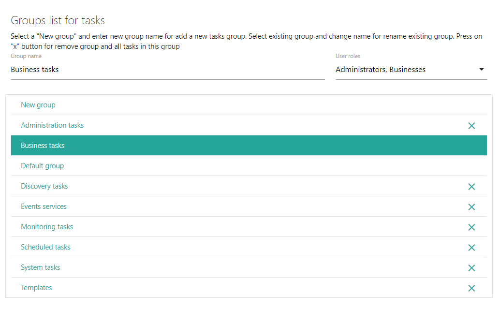

Возвращаемое значение: нет
Описание полей ввода
Group name
Поле служит для ввода названия новой группы или редактирования названия существующей
User roles
Поле служит для ввода ролей, которым будет доступна данная группа задач в действии Task maker. Назначение для задачи определенной группы влияет на доступ к ней пользователей.
Список групп
В списке групп можно создать, удалить или отредактировать название существующей группы
New group
Если необходимо добавить новую группу, выберите New group и введите название группы в Group name
<Группа>
Если требуется отредактировать название группы, выберите группу и измените ее название в Group name
Если необходимо удалить группу, нажмите на "x" рядом с названием группы
Все изменения вступят в силу только после запуска действия.